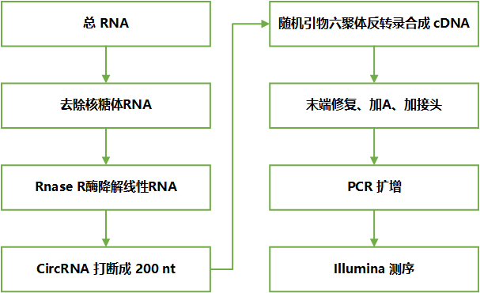
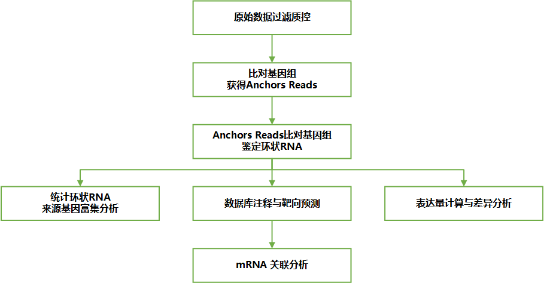
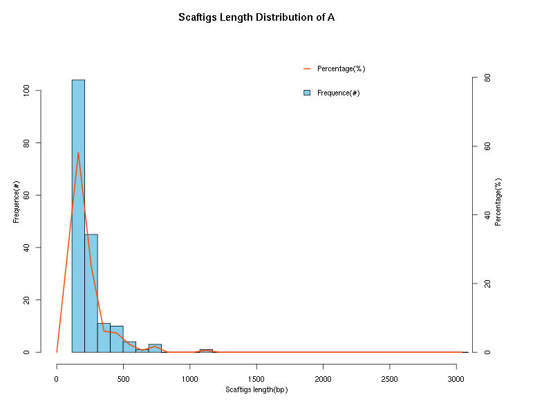
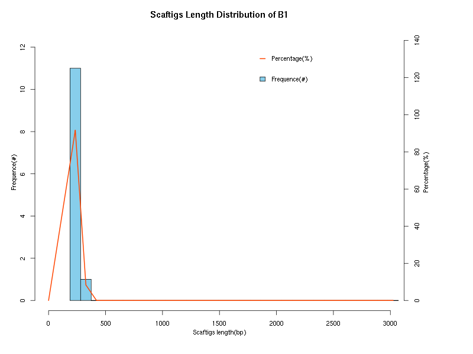

1 技术简介
1.1 实验简介
|  | 样品提取总RNA后，去除核糖体RNA，然后用Rnase R酶降解线性RNA。得到的环状RNA中加入fragmentation buffer使其片断成为短片段，再以片断后的环状RNA为模板， 用六碱基随机引物（random hexamers）合成cDNA第一链，并加入缓冲液、dNTPs、RNase H和DNA polymerase I合成cDNA第二链， 经过QiaQuick PCR试剂盒纯化并加EB缓冲液洗脱经末端修复、加碱基A，加测序接头，再经琼脂糖凝胶电泳回收目的大小片段，并进行PCR扩增， 从而完成整个文库制备工作，构建好的文库用Illumina HiSeqTM 2500进行测序。 |
| Fig 1-1-1 实验流程图 |
1.2 信息分析简介
|  |
| Fig 1-2-1 信息分析流程图 |
2 测序评估
2.1 测序质量评估
| Scaftig_id | A_avgDepth | B1_avgDepth | B2_avgDepth | A_relativeAbundance | B1_relativeAbundance | B2_relativeAbundance | Kingdom | Phylum | Class | Order | Family | Genus | Species |
|---|---|---|---|---|---|---|---|---|---|---|---|---|---|
| UCLUST_0_A_001 | 9.34 | 0 | 0 | 0.008531 | 0.000000 | 0.000000 | |||||||
| UCLUST_1_B2_01 | 5.71 | 2.88 | 10.49 | 0.005215 | 0.015315 | 0.024288 | Bacteria | Proteobacteria | Gammaproteobacteria | Enterobacteriales | Enterobacteriaceae | ||
| UCLUST_2_A_002 | 6.98 | 0 | 0 | 0.006375 | 0.000000 | 0.000000 | |||||||
| UCLUST_3_A_003 | 9.51 | 0 | 0 | 0.008686 | 0.000000 | 0.000000 | |||||||
| UCLUST_4_A_004 | 8.64 | 0 | 0 | 0.007891 | 0.000000 | 0.000000 | |||||||
| UCLUST_5_A_005 | 6.28 | 0 | 0 | 0.005736 | 0.000000 | 0.000000 | |||||||
| UCLUST_6_A_006 | 7.54 | 0 | 0 | 0.006887 | 0.000000 | 0.000000 | |||||||
| UCLUST_7_A_007 | 6.79 | 0 | 0 | 0.006202 | 0.000000 | 0.000000 | Caudovirales | Siphoviridae | Hk578likevirus | Sodalis phage SO1 | |||
| UCLUST_8_A_008 | 11.42 | 0 | 0 | 0.010431 | 0.000000 | 0.000000 | |||||||
| UCLUST_9_A_009 | 6.27 | 0 | 0 | 0.005727 | 0.000000 | 0.000000 |
2.2 碱基组成与质量分析
3 测序评估
3.1 测序质量评估
3.2 碱基组成与质量分析

3.3 过滤信息统计
| Sample | Before Filter | After Filter | ||||||||
|---|---|---|---|---|---|---|---|---|---|---|
| Clean Data(bp) | Q20(%) | Q30(%) | N(%) | GC(%) | HQ Clean Data(bp) | Q20(%) | Q30(%) | N(%) | GC(%) | |
| A | 6250000 (100.00%) | 5955162 (95.28%) | 5659488 (90.55%) | 52 (0.00%) | 3526970 (56.43%) | 6249500 (99.99%) | 5954718 (95.28%) | 5659109 (90.55%) | 52 (0.00%) | 3526653 (56.43%) |
| B1 | 6250000 (100.00%) | 5919289 (94.71%) | 5604058 (89.66%) | 41 (0.00%) | 3094553 (49.51%) | 6249500 (99.99%) | 5918859 (94.71%) | 5603675 (89.67%) | 41 (0.00%) | 3094304 (49.51%) |
| B2 | 6250000 (100.00%) | 5966228 (95.46%) | 5681793 (90.91%) | 81 (0.00%) | 3460031 (55.36%) | 6249250 (99.99%) | 5965484 (95.46%) | 5681064 (90.91%) | 81 (0.00%) | 3459625 (55.36%) |
| Sample | Clean Reads Num | HQ Clean Reads Num(%) | Read Length | Adapter(%) | Low Quality(%) | Poly A(%) | N(%) |
|---|---|---|---|---|---|---|---|
| A | 50000 | 49996 (99.99%) | 125+125 | 2 (0.01%) | 0 (0%) | 0 (0%) | 0 (0%) |
| B1 | 50000 | 49996 (99.99%) | 125+125 | 2 (0.01%) | 0 (0%) | 0 (0%) | 0 (0%) |
| B2 | 50000 | 49994 (99.99%) | 125+125 | 3 (0.01%) | 0 (0%) | 0 (0%) | 0 (0%) |
4 组装
assembly result
|  |  |
| Fig 4-0-1 样本A组装结果长度分布 | Fig 4-0-2 样本B1组装结果长度分布 说明：X轴表示Scaftigs的长度值，大于3000统一看做3000；左侧的Y轴（Frequence#）表示Scaftigs的数目（频数）， 右侧的Y轴（Percentage%）表示Scaftigs数目占Scaftigs总数的百分比。 |
- scaftigs文件(fasta格式): A.scaftigs.fasta
- scaftigs长度统计文件: A.scaftigs.fasta.length